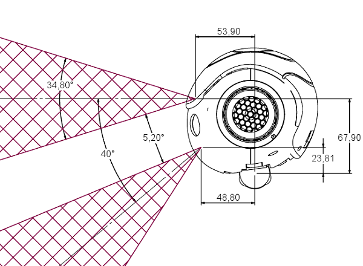

Video camera¶
NAO Hardware | Product range | Motors & Kinematics | Components & Sensors | Optional devices
Components & Sensors | Battery | IR (Infra-Red) | LEDs | Loudspeakers | Microphones | Video camera
See also
Two identical video cameras are located in the forehead. They provide a 640x480 resolution at 30 frames per second. They can be used to identify objects in the visual field such as goals and balls, and bottom camera can ease NAO’s dribbles.
| NAO Model | v3.x | v4.0 |
|---|---|---|
| Sensor Model | OV7670 | MT9M114 |
| Camera output | VGA@30fps (YUV422 color space) | 960p@30fps (YUV422 color space) |
| Field of view | 58°DFOV (47.8°HFOV, 36.8°VFOV) | 72.6°DFOV (60.9°HFOV, 47.6VFOV) |
| Focus range | 30cm ~ infinity | 30cm ~ infinity |
| Focus type | Fixed focus | Fixed focus |
The picture underneath is a RGB conversion of the YUV422 file sent by the camera.

Camera Position¶
Head 4.0¶

|

|
Head 3.3¶
Warning
The conception of the head 3.3 does not warrant the angle between the 2 cameras.
Head 3.2¶
| Camera name | X(m) | Y(m) | Z(m) | WX(rd)[deg]* | WY(rd)[deg]* | WZ(rd)[deg]* |
|---|---|---|---|---|---|---|
| CameraTop | 0.0539 | 0.0 | 0.0679 | 0.0 | 0.0 | 0.0 |
| CameraBottom | 0.0488 | 0.0 | 0.02381 | 0.0 | 0.6981 [40.0] | 0.0 |
Note
We adopt the roll, pitch and yaw notation for angle representation. So, to construct an homogeneous transform with rotation (Wx,Wy,Wz) use T=rotZ(Wz)*rotY(Wy)*rotX(Wx).